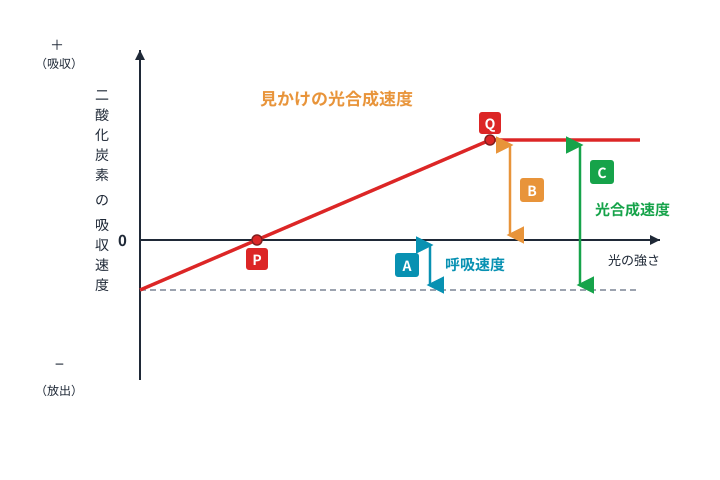

BL02 呼吸と光の強さ・補償点・光飽和点
1. 呼吸とは
呼吸とは、デンプンなどのをを使って、とを作り、このときに生命活動のを取り出す反応です。
重要：呼吸の式
＋
→
＋
C₆H₁₂O₆ ＋ 6O₂ → 6CO₂ ＋ 6H₂O （エネルギーを取り出す）
大事なポイント
植物は、昼間はをしますが、一方で一日中、自分で作った有機物をもとに を一定の割合でおこなっています。
2. 光の強さと光合成速度の関係
植物を暗室に入れ、植物にあてる光の強さを少しずつ強くしていくと、光合成速度（単位時間あたりのCO₂吸収量）は次のように変化します。

図1：光の強さと CO₂ の出入りの関係
暗黒下では、植物はができないため、のみが行われ、CO₂を放出します。光が強くなると速度が増え、やがてCO₂の出入りがゼロになる点（補償点）を超えて、CO₂を吸収するようになります。
3. 補償点と光飽和点（重要！）

図2：P＝補償点、Q＝光飽和点、A＝呼吸速度、B＝見かけの光合成速度、C＝真の光合成速度
A：速度
B：速度
C：速度
A：呼吸速度
植物は一日中つねに一定の割合で呼吸をしており、CO₂を出し続けている。
B：見かけの光合成速度
実験で測ったCO₂吸収量。呼吸を引いた値。
C：真の光合成速度
本当に行われている光合成の速度。C = A + B
大事な式
＝
＋
真の光合成 ＝ 呼吸 ＋ 見かけの光合成
※呼吸で出したCO₂を光合成にも使うから
※呼吸で出したCO₂を光合成にも使うから
P は、の速度との速度が等しいので、CO₂の出入りはないように見えます。このときの光の強さ（明るさ）を といいます。
Q は、光を強くしてもそれ以上光合成速度は大きくならないという点で、 といいます。それ以後の範囲を といいます。
練習問題
1
呼吸の反応式の空欄をうめなさい。
＋
→
＋
2
光合成の速度と呼吸の速度が等しくなり、CO₂の出入りがないように見える光の強さを という。
3
光をいくら強くしても、それ以上光合成速度が大きくならない点を という。
4
実験で測定される CO₂ 吸収量は 速度であり、本当の光合成速度（真の光合成速度）は、これに 速度を加えたものになる。
5
植物は昼間も夜も、一日中 を一定の割合でおこなっている。